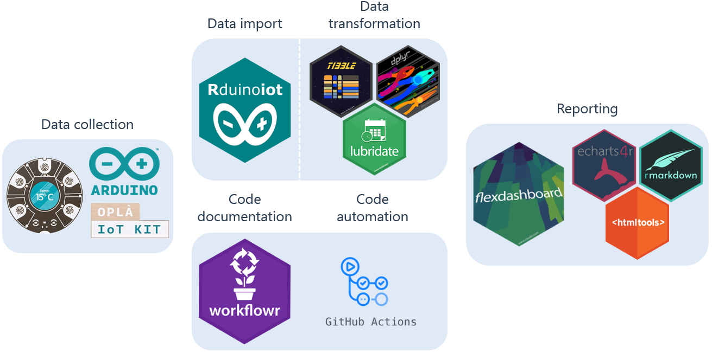

Last updated: 2022-09-30
Checks: 2 0
Knit directory: Rduinoiot-analysis/
This reproducible R Markdown analysis was created with workflowr (version 1.7.0). The Checks tab describes the reproducibility checks that were applied when the results were created. The Past versions tab lists the development history.
Great! Since the R Markdown file has been committed to the Git repository, you know the exact version of the code that produced these results.
Great! You are using Git for version control. Tracking code development and connecting the code version to the results is critical for reproducibility.
The results in this page were generated with repository version 40deca3. See the Past versions tab to see a history of the changes made to the R Markdown and HTML files.
Note that you need to be careful to ensure that all relevant files for the analysis have been committed to Git prior to generating the results (you can use wflow_publish or wflow_git_commit). workflowr only checks the R Markdown file, but you know if there are other scripts or data files that it depends on. Below is the status of the Git repository when the results were generated:
Ignored files:
Ignored: .Rhistory
Ignored: .Rproj.user/
Ignored: databases-incognito/
Unstaged changes:
Modified: analysis/license.Rmd
Note that any generated files, e.g. HTML, png, CSS, etc., are not included in this status report because it is ok for generated content to have uncommitted changes.
These are the previous versions of the repository in which changes were made to the R Markdown (analysis/index.Rmd) and HTML (docs/index.html) files. If you’ve configured a remote Git repository (see ?wflow_git_remote), click on the hyperlinks in the table below to view the files as they were in that past version.
| File | Version | Author | Date | Message |
|---|---|---|---|---|
| Rmd | e86011b | FlavioLeccese92 | 2022-09-30 | index schema |
| html | e86011b | FlavioLeccese92 | 2022-09-30 | index schema |
| html | f8456f2 | FlavioLeccese92 | 2022-09-27 | push |
| html | a729819 | FlavioLeccese92 | 2022-09-25 | rearrange site |
| html | 2f3dcbb | FlavioLeccese92 | 2022-09-25 | test |
| html | 50dcd8c | FlavioLeccese92 | 2022-09-24 | index.html update |
| html | 71b5efd | FlavioLeccese92 | 2022-09-24 | Build site. |
| Rmd | e44daf0 | FlavioLeccese92 | 2022-09-24 | Publish the initial files for myproject |
| Rmd | e1dee4f | FlavioLeccese92 | 2022-09-24 | commit new index |
| html | e1dee4f | FlavioLeccese92 | 2022-09-24 | commit new index |
| Rmd | 9a79767 | FlavioLeccese92 | 2022-09-24 | merge |
| Rmd | 555d36a | FlavioLeccese92 | 2022-09-24 | the first commit |
| html | 555d36a | FlavioLeccese92 | 2022-09-24 | the first commit |
I have always been fascinated by the potential of open-source tools interaction, among which R (long live R!) and lately Arduino.
For those who don’t know, Arduino is an open-source hardware and software company which designs and produces microcontroller kits for the deployment of digital services, both at a professional, hobby and educational level. Furthermore, the community is very active and smart.
Here you can find many projects, including Home Automation, Robotics and even more.
To me as a data scientist with a statistical background, electronics is a black box, for this reason I chose to a 99% plug-and-play solution: Arduino Oplà IoT Kit.
If you want to know more, here’s a video introducing you the kit:
The kit comes with 4 integrated sensor measuring Humidity, Pressure, Temperature and Light.
Starting to collect data from these sensor is very simple: you just need to deploy an appropriate sketch to the mother board, which can be done through the dedicated IDE or a guided procedure.
Once everything is set up, you will have data flowing from sensors to the cloud and visibile via a dashboard hosted on Arduino Cloud, free for 12 months with the kit purchase. Here you can access mine to have an idea.
Data are stored into a cloud database and retrival of data is possible throught an API which can be queried, guess what…
R!
The R ecosystem is constantly growing, adding new amazing productive tools such as Workflowr and Flexdashboard, which perfectly exploit Github actions in order to automatize their scope.
Furthermore, in order to make it easier to access Arduino Iot Cloud API , I developed an R package through pkgdown. The package is called Rduinoiot and can be found on CRAN.
